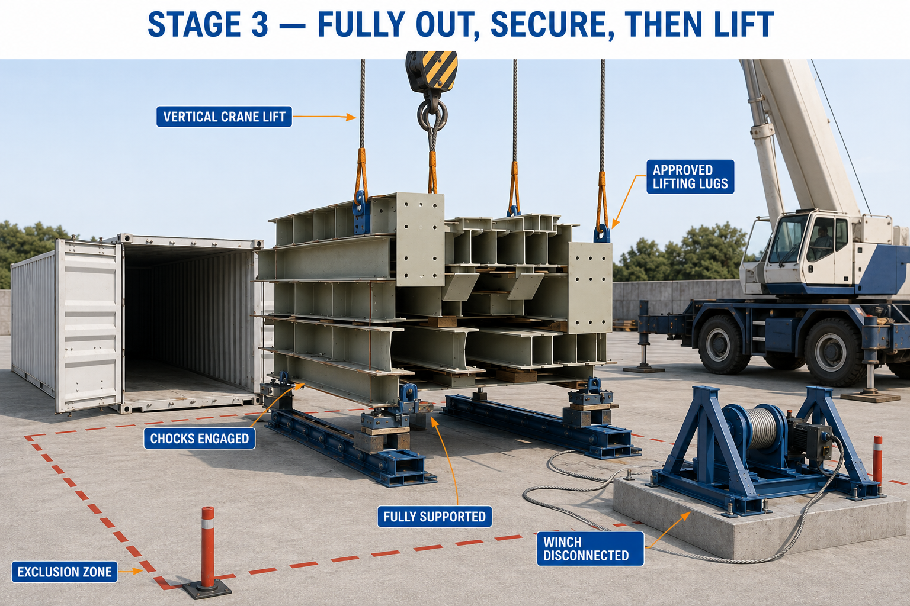

S.04 / Temporary works design development
Controlled steel offloading
A defined load path and staged handling sequence, translated into a preliminary structural calculation package.
- MY ROLE
- Designer · Concept & calculations
- DISCIPLINE
- Steel handling / Temporary works
- PERIOD
- September 2026
- ISSUE STATUS
- Design development · P01-DD

The task
The design task was to define a controlled horizontal extraction arrangement and to separate the pulling operation from the later vertical lift.
My contribution
I prepared the design-development calculation note for the proposed arrangement, including the pulling connections, equalizer, braced winch support, reinforced-concrete restraint, and transfer tracks. The concept visuals explain the intended sequence alongside the calculations.
What I delivered
- Defined extraction and transfer arrangement with a coordinated load path.
- Preliminary component and connection calculations.
- Concept visuals for setup, controlled extraction, and the separate lifting stage.
- A record of assumptions and the evidence required before release.
The result
The package provides a structured basis for detailed verification and coordination of the handling arrangement.
Status: preliminary design development, not for site use. The design basis, physical interfaces, supplier evidence, and independent checking remain subject to confirmation.
